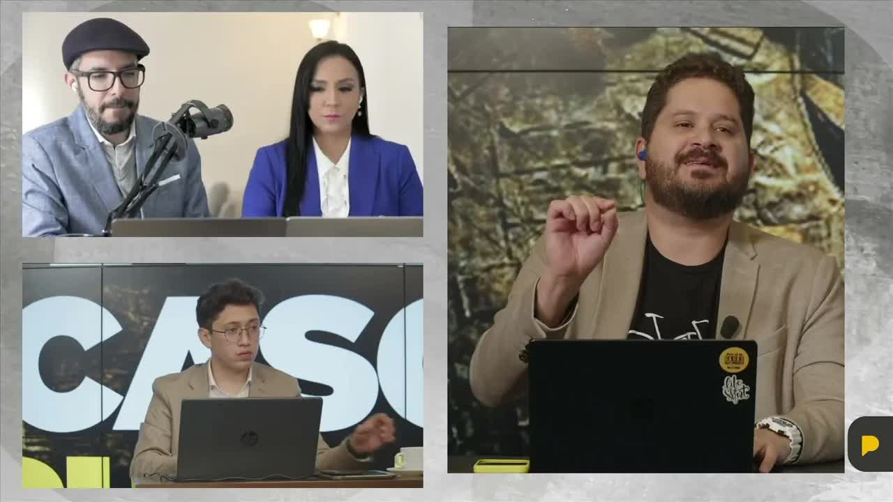
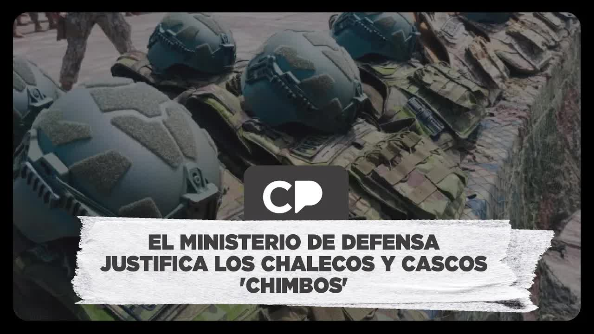
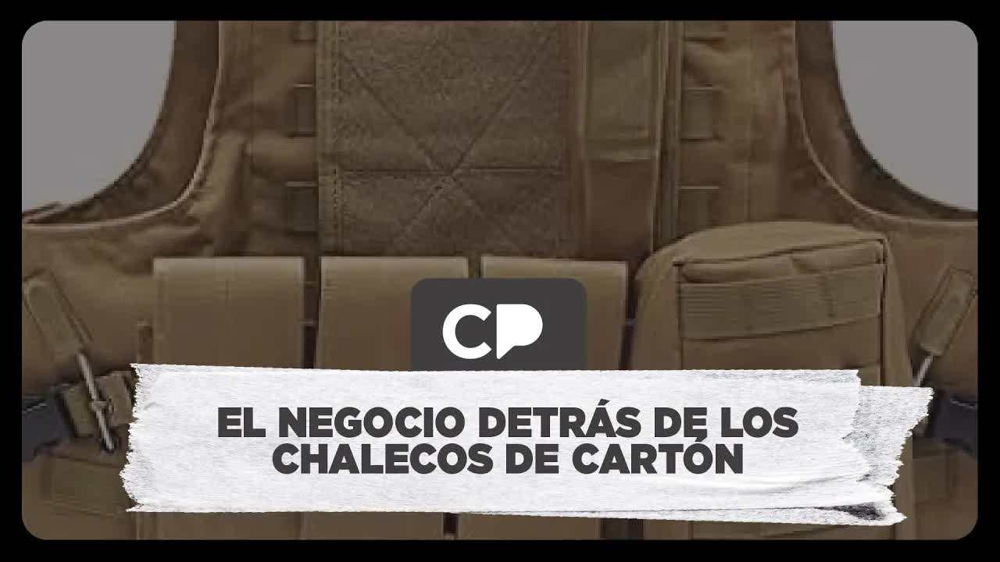
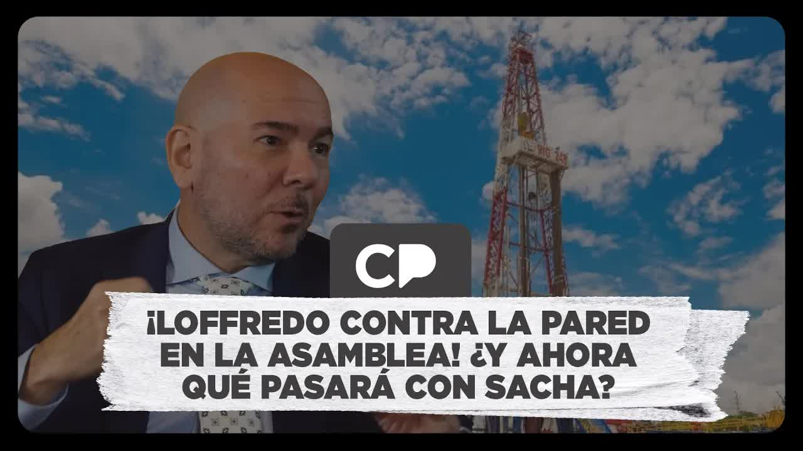

Installment 1 · Crooked contracts
9 mm · 6 shotsThe bullets lodged in the second of twenty layers, according to the Defense Ministry
The man at the center of the allegations is Gian Carlo Loffredo, defense minister. In the middle of the war on organized crime, his ministry bought 34 million dollars' worth of vests and helmets for eight out of ten soldiers, and it bought them from a company the state itself had declared in breach of contract and barred until 2029. The contract was signed by a civilian delegate of the minister. According to La Posta's military sources, the commission never tested the equipment at the factory as the contract required; when Army officers ran their own tests, they wrote a report dated one week before delivery. La Posta published it, and the Attorney General's Office (Fiscalía) opened an investigation into the Defense Ministry's purchase.
AcknowledgmentFollowing the publication, the Attorney General's Office opened an investigation into this Defense Ministry purchase.

On February 25, 2025, the Joint Command of the Armed Forces issued an unusual statement: a call for unity, for our hands not to tremble. When someone calls for unity, it is because they need it. In La Posta's newsroom they already knew why. The heads of the three branches disagreed with a Defense Ministry purchase and with its minister, Gian Carlo Loffredo.
Six weeks earlier, on January 13, President Daniel Noboa and Loffredo had handed over 31,000 helmets and 30,000 vests at the Héroes de Chacras fort in Machala, with great fanfare and a bulletin from the Communications Secretariat: 81 percent of military personnel equipped with the highest technology, American-made ballistic panels that withstand handgun fire of every caliber, rifle-resistant plates, certified by an international laboratory under the US NIJ standard. Luis Eduardo Vivanco asked the usual question: how much did it cost, who got the contract and with what guarantees. He got something that is rarely obtained: the restricted contract.

| Item | Quantity | Amount |
|---|---|---|
| Level IIIA ballistic vests | 30.400 | $ 17 M |
| High-cut level IIIA ballistic helmets | 29.247 | $ 7 M |
| Ballistic plates | 57.760 | $ 9 M |
| Plate carriers | 983 | $ 471.000 |
| Inner vests | 113 | included |
| Other helmets | 2.169 | $ 500.000 |
| Total | $ 34.216.384 | |
| Advance (50%) | $ 17.108.192 |
Contract 2024-GUA-001, for the acquisition of helmets and vests in the context of the internal armed conflict, signed on August 19, 2024, and restricted since March 26. Signing for the state was Jorge Yamil Juez Cabezas, general coordinator for strategic goods procurement, the minister's delegate: not a single military officer. For the supplier, High End Defense Solutions LLC, HEDS. Amount: 34,216,384 dollars, with a 50 percent advance, 17.1 million, payable fifteen days after signing. The contract administrator was designated in the same document: the undersecretary for defense planning and economics, Francisco Martínez, a civilian with no experience in weaponry. Bidding closed on July 1, 2024, with fifteen bidders; the contract was awarded on July 18.
The contract was signed by a civilian delegate of the minister. The process was declared restricted four months before the award.
Sara Valencia: Signed the 34 million contract for HEDS. The SRI tax agency lists her as a veterinarian.
The contract required four officers to test the equipment at the factory. No one later verified it in a laboratory certified to that standard.
The bar compares the amount for each item; the figure on the right is the number of units.
120,672 pieces in total, for eight out of ten soldiers
In Santa Bárbara, the Army concludes that the ammunition is level II. The high command knows before the handover.
Jan 13, 2025 · Loffredo hands over the helmets and vests in Machala, alongside President Noboa.Tests at the firing range. The Defense Ministry tries to remove La Posta.
Honeywell fiber · 20 layersThe bullets lodged in the second of twenty layers, according to the Defense Ministry
No deformation on the back face of the plate
The objectionArmy officers asked that the tests be carried out under the NIJ standard in the contract: velocities, calibers, ammunition and clay to measure trauma, in a recognized laboratory. Ecuador has no laboratory for that standard, and the helmets cannot be tested in the country.
HEDS already had a history with the Ecuadorian state. The police had contracted it for 5,508,000 rounds of ammunition and in December 2023 asked for it to be declared a supplier in breach. Sercop did so: barred from contracting with the state until December 2, 2029. The company, through its legal representative Franklin Esparza de la Vega, sued Interior Minister Mónica Palencia and the police commander with a protection action and lost. Another action, granted by a judge in Samborondón, removed it from the registry of suppliers in breach for two weeks; in that window the Defense Ministry signed the contract, and afterward the company went back onto the registry. On July 24, 2024, Admiral Jaime Vela, head of the Joint Command, warned the minister by letter that the company had been declared in breach. Loffredo signed anyway, 26 days later. Palencia filed a complaint against the judge for malfeasance and clashed with Loffredo for rewarding a company she had barred with 34 million; the president backed Loffredo.
The chats La Posta showed on screen, exported from the original phone and notarized, begin on April 11, 2024: a retired captain, César Díaz, from the bidder Blindex, introduces himself on WhatsApp to Eduardo Reinoso and leaves him his number; the next day he asks how he would like a gift vest personalized. In May, Díaz sends him some vest purchase specifications, "in case they're useful to Midena." On July 15 he sends him the police document declaring HEDS in breach; Reinoso replies that he sent the wrong message. It was Esteban Rubio, former director of Strategic Goods at the Defense Ministry, who on February 27 asked on La Posta that the minister explain who Reinoso was, "who handled all the negotiations." Reinoso replied in writing that he is an external communications adviser, that he does not appear on the ministry's staff roster and that he never received money from suppliers; the ministry said it would consult "the highest authority" and never responded again.
There was another anomaly. To sell to the Armed Forces, a company must qualify as a defense supplier before a commission chaired by the undersecretary of defense, under Decree 470; one of the requirements is not being a contractor in breach. HEDS did not qualify. The contract was handled under the general public procurement law, the one used to buy confetti and breakfasts, and not under the regulations for strategic defense goods. The military, which had always bought vests from Israel, did not take part in drafting the bidding terms, did not administer the contract and did not go to test the equipment. The tenth clause required the contractor to receive at its factory in the United States a commission of four officers, one from each branch, to inspect the goods before shipment. The minister says a Joint Command commission traveled; former Army commander Luis Altamirano said it was the contract administrator, who is not a technical expert, who went, and that the commission did not meet the requirements. Signing the contract for HEDS was Sara Valencia, whom the SRI tax agency lists as a veterinarian.
When the equipment arrived, the Army, which signs the delivery certificate and is legally responsible, decided to test it on its own at Santa Bárbara, the military arms factory. The company ran the test in front of the officers. The report, signed by a lieutenant colonel and ballistics engineer as the delegated officer and dated January 6, 2025, one week before the handover in Machala, concluded that the ammunition traveled at 319 meters per second, a level II velocity rather than IIIA, and that it could not reach any conclusive opinion on the panels or the helmets; it recommended repeating the test under the NIJ standard in the contract and using a recognized laboratory because the country does not have one. The high command knew before the ceremony. La Posta dubbed them cardboard vests. Inside, according to Altamirano, it was already an open secret.
The government's reaction was a press conference with gunfire. The minister's team had told La Posta that it was "100% deployed in classified security operations"; that afternoon Loffredo talked about a media show in election season. On February 27, a day after the publication, he led ballistic tests at an Army firing range in Quito, with the head of the Joint Command behind him. The Defense Ministry maintained that the vests were chosen at random; La Posta objected that there was no selection by batch, no velocity measurement, no weighing of ammunition and no clay. Six 9-millimeter shots: the bullets lodged in the second of the twenty layers of Honeywell fiber. One 5.56 round: no deformation on the back face of the plate. The minister said the report was the work of "a couple of soldiers with dark interests on a piece of letterhead" and that the Army would consider disciplinary action. Friendly media outlets were invited. When Jorge Navarrete, of La Posta, arrived without accreditation, an undersecretary from the Communications Secretariat (Secom) tried to throw him out and colleagues shouted at him to go to Canada; a colonel let him record. Altamirano, the former Army commander, said he would not put on that vest. Rubio proposed the obvious: take three or six vests from each batch and have an impartial third party test them.
The bullets lodged in the second of twenty layers, according to the Defense Ministry
No deformation on the back face of the plate
Army officers asked that the tests be carried out under the NIJ standard in the contract: velocities, calibers, ammunition and clay to measure trauma, in a recognized laboratory. Ecuador has no laboratory for that standard, and the helmets cannot be tested in the country.
The minister who has the obligation to face the questions picks the media that won't make him uncomfortable. That's called propaganda, it's not called journalism.
Andersson Boscán, February 27, 2025
On March 5, La Posta published the second part, two hours and twenty-two minutes long: the chats between César Díaz, of the bidder Blindex, and two men from the minister's inner circle, Eduardo Reinoso and Guayaquil communications consultant Andrés Tacle, neither of whom held a post at the Defense Ministry. Tacle had submitted a quote to the ministry in June 2024 and was telling Díaz in real time how many bids were coming in and which one did not comply, in a restricted process. Díaz and Reinoso met at least five times, some of them at the ministry itself; Reinoso asked for messages to be deleted. The source was Díaz himself, who lost: "High End had a better relationship with the advisers." Díaz wrote to Reinoso asking him to repeat his threat that he had four years in power to ruin him. Tacle replied that he has been friends with Reinoso for years and that he helped the minister with media training. La Posta asked Carondelet to remove Loffredo or file a complaint against him. On March 7, a short video on the court battle that opened the door to HEDS. From Uruguay, Luisa González seized the moment: they talked to us about freedom, but it was their freedom, meaning impunity to turn Ecuador into their family business.
On March 11, 2025, Sercop told the National Assembly that the police had sanctioned the wrong parties, the individuals rather than the company, and admitted that the restricted contract had not gone through its rules; Loffredo did not appear. Ana Galarza had requested information by official letter months before the publication. Comptroller Mauricio Torres asked the Assembly to lift the restriction on the contract. The session was called for March 13, 2025. That same day it emerged that the Attorney General's Office had opened a preliminary embezzlement inquiry, under Article 278 of the criminal code, against whoever turned out to be responsible at the Defense Ministry. Acting Comptroller Carlos Sánchez then suspended the declassification request: all the documentation had been placed under chain of custody. The Assembly was left with nothing to examine.
Loffredo did not leave office. In April 2025, La Defensa documented another multimillion-dollar Defense Ministry contract with the same company. Months later, Santa Bárbara EP, the sector's state company in liquidation, awarded 214,751 dollars to Alcolisti LLC, HEDS's representative in Ecuador, for vests, helmets and shields for the Central Bank's security staff. It was signed by its manager, Miguel Weisson Chiriboga, appointed on July 15 despite a ban on holding public office registered with the Labor Ministry, according to Radio Pichincha. In August 2025, Peru's military factory awarded HEDS, also barred there, a contract for 10,164 vests for its police.
The preliminary inquiry remains open, with no defendants. The 30,000 vests are in use. No one has tested them in a laboratory certified under the standard the contract required.
Updated September 5, 2026
The police ask for HEDS to be declared a supplier in breach over 5.5 million rounds of ammunition.
The Defense Ministry declares the process information restricted.
Fifteen bidders. An external adviser to the minister tells bidder Díaz which one does not comply.
Díaz sends Reinoso the police document declaring HEDS in breach.
34 million, against a reference budget of 39.
Admiral Vela warns the minister that HEDS has been declared in breach.
HEDS files another protection action against the Interior Ministry and withdraws it the next day.
Contract 2024-GUA-001. 50% advance.
The Sercop registry disqualifies HEDS until December 2, 2029; the breach declaration predated the signing.
In Santa Bárbara, the Army concludes that the ammunition is level II. The high command knows before the handover.
Loffredo hands over the helmets and vests in Machala, alongside President Noboa.
The Joint Command calls for unity.
Crooked contracts put soldiers at risk.
Tests at the firing range. The Defense Ministry tries to remove La Posta.
The chats and the deal behind them.
Admits the contract did not go through its rules. Loffredo does not appear.
Preliminary embezzlement inquiry. The Comptroller General's Office suspends declassification.
Peru's military factory awards HEDS, also barred there, a contract for 10,164 vests.
The inquiry remains open. Loffredo is still in office.

Defense minister.
External communications adviser to the minister, with no post at the Defense Ministry. According to the chats, he handled the negotiations.
Guayaquil communications consultant in the minister's circle. Kept bidder Díaz informed in real time.
Interior minister. Declared HEDS in breach and filed a malfeasance complaint against the judge who removed it from the registry.
Signed the 34 million contract for HEDS. The SRI tax agency lists her as a veterinarian.
Supplier of the vests and helmets.
HEDS's representative in Ecuador. Legal representative: César Soria Estrada.
Manager of Santa Bárbara EP. Signed the new contract.
Photos via Wikimedia Commons. Gian Carlo Loffredo: Michelleav89 (CC0); Mónica Palencia: Mónica Palencia. palenciamonica.com (CC0).
He called the report "a media show in election season" and the work of "a couple of soldiers with dark interests on a piece of letterhead." He said a Joint Command commission traveled to the United States, that the tests were done in an NIJ-standard laboratory, that the supplier sells vests to the FBI and that he "didn't have a magic ball" to know about the ban. On the shots fired on February 27, the Defense Ministry maintained that the 9 mm bullets stopped in the second of twenty layers.
Reinoso: he is an external adviser, does not deal with suppliers and received no money. Tacle: years of friendship with Reinoso and occasional work with the minister on media training.
It called ballistic tests at Army Command on February 27, 2025, and excluded La Posta.
"They talked to us about freedom, but it was their 'freedom,' meaning impunity to turn Ecuador into their family business" (February 27, 2025, from Uruguay).



top commanders of the different branches in a position of rejecting what the Ministry of defense has done mainly the minister of defense giancarlos lofredo in relation to an acquisition that is more than opaque dark Apparently very much outside the law of the traditional procedures and most importantly that can put at risk or is putting at risk the lives of thousands of soldiers who day after day day and …
Read the full transcriptquestions that from that report and and second with that report on the table I wouldn't put on one of those vests to go I don't know if that's clear and then our second guest who an expert in defense procurement specifically defense materiel was one of the people in charge of special procurement at this ministry described all the inconsistencies in this procedure from its i…
Read the full transcriptthanks to our audience your messages of support we're here to tell you the truth as always Let's see it's a hectic morning a few minutes ago the minister of defense giancarlos lofredo who is in the middle of a controversy after announcing that if it was la posta where an Ecuadorian army report was revealed in which some army weapons specialists contradict what the Ministry of defense says…
Read the full transcriptash for everyone who played Carnival so you know go to confession go to church to reflect because there are some people who haven't reflected ah uh There are a lot of things going on in the country there's a huge scandal around the Sacha field and the milking there's a scandal around the cardboard vests we'll tell you about it we had promised you we would keep watching and when la posta Looks …
Read the full transcriptyesterday we published this thing about the minister knew since July 24 when admiral vela sends him a letter that High end Solutions the company that supplies the cardboard vests had been declared a contractor in breach with the state and someone tells me but well you had said this is a later date let me clarify that a bit they were prohibited from contracting with the state uh on July 24 The Joint Command…
Read the full transcriptDaniel Novoa in a in a statement he published last week on his social media we're also going to talk about what happened yesterday in the security committee the ccop went to talk about the cardboard vests about lofredo and is going to have to return to the committee We'll discuss it now mister Anderson boscán What are the people saying well it's over it's over Sacha and it was confirmed this morning with with Carlos rojas uh …
Read the full transcriptTranscripts from each show's automatic captions. They have not been corrected by hand: use them to find a phrase and jump to the exact minute in the video, not as verbatim quotes.
The Attorney General's Office opened the case file and the Comptroller General's Office stepped aside.
In Ecuador through Alcolisti; in Peru, to the police.
The original shows and clips are hosted on this site. The chats in the second installment were exported from the original phone and notarized. The Army documents cited will be added once they have been digitized for publication.